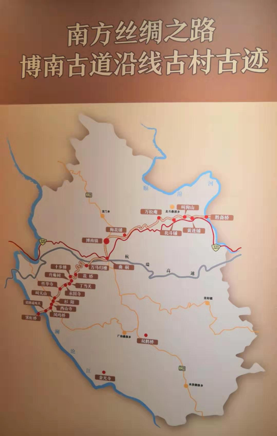
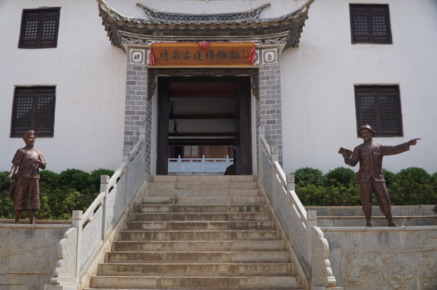
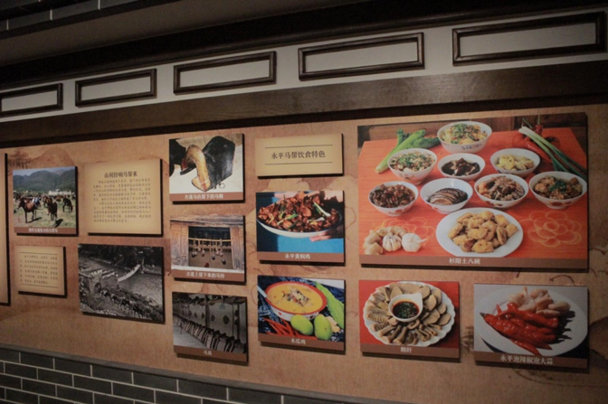
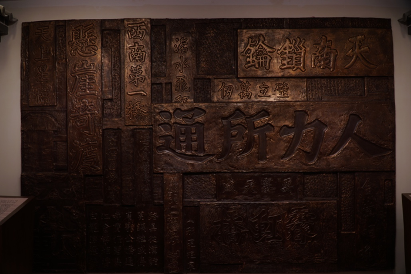
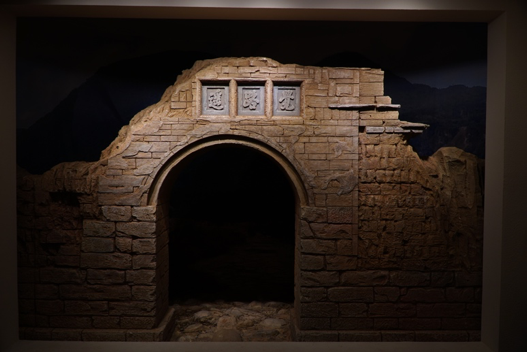
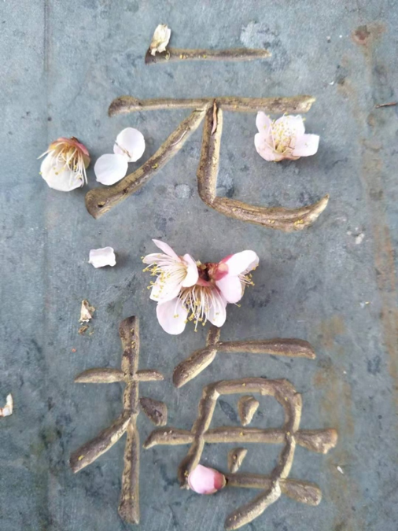
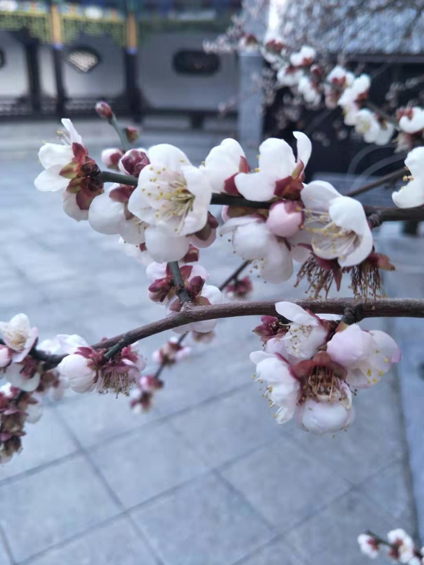

博南古道---重遊南方絲綢之路的樞紐
Bonan Ancient Path –The Hub of Revisiting the Southern Silk Road
簡介
Introduction
漢武帝時期，張騫出使西域，他歷盡千辛開闢出北方絲綢之路，發現路途中多有羌人與匈奴的阻礙，他推斷西南應當也有一條通往西域的路，且路上少有外族阻撓的危險。正如他所預料的，早在公元前4世紀，古代商旅便開拓出了一條民間商道。這條路被稱為「蜀---身毒道」，蜀指的是四川，身毒則是印度的古稱，既是指從四川出發，經過雲南、緬甸直至印度的商路。 這是西南絲綢之路的開端，也是博南古道作為交通樞紐的開始。 永平縣境內的博南古道全長100多公里，是整個南方絲綢之路中保存最完整、唯一沒有岔路的地段。
During the period of Emperor Wu of the Han Dynasty, Zhang Yi went to the
Western Regions. He traced the Silk Road of the North and found that there were many
obstacles between the monks and the Xiongnu. He inferred that there should be a road to the
Western Region in the southwest, and there are few foreigners on the road. danger. As he
expected, as early as the 4th century BC, the ancient business trade opened up a private
business trade rounte. This road is called "Shu---Shendu road", Shu, which refers to
Sichuan. Shendu is the ancient name of India. It refers to the trade route from Sichuan and
through Yunnan and Myanmar to India.
This is the beginning of Southwest Silk Road and also the beginning of Bonan Ancient Road as
a transportation hub.
The Bonan Ancient Road in Yongping County is more than 100 kilometers long and is the most
intact and unique road in the southern Silk Road.
博南古道
Bonan Ancient Road

博南古道以永平縣境內的博南山得名；「博南」，意為「博大的南方」。博南古道連接了滇、緬兩地，開通後成為了歷代的主要軍商通道。以前，南方絲綢之路上充斥著從各地來的馬幫，馬幫是牽馬的貨郎，他們將各式各樣的物品，放在馬背上，遊走在內陸和山間，以物換物，賺取差價。在抗日戰爭時期，前線供給和槍支彈藥也多經由此路運輸。新中國成立後，滇緬公路永平段改建，公路走勢與博南古道相同，且大部分重合。除此，320國道、大保高速公路及大瑞鐵路，也都在征服博南山，也佐證了博南古道的前瞻性。亦是因為交通的便利，這條曾人頭攢動的道路慢慢歸於沈寂。 博南古道其中一段處於永平縣博南鎮十六條村裡的花橋村。古驛站名為「花橋」，後發展為花橋古鎮。為了發展旅遊業，花橋鎮將古道前後共修復了兩次，但沿路踏著的石頭中有些仍是具兩千多年歷史的石頭，上面還有清晰可見的馬蹄印。
Bonan Ancient Road is named after the Bonan Mountain in Yongping County.
‘Bonan’ means ‘the Great South’. Bonan Ancient Road connected the route from Yunnan to
Myanmar, thus, it became the main path for military and trade in the past. The Southern
Silk Road used to be crowded with merchants from different places. The merchants used
horses as the main transport to trade all kinds of goods. They put the merchandise on
horsebacks and traded goods to earn with the price difference. During the War of
Resistance against Japanese Aggression, frontline supplies and ammunition were also
mainly transported via this path. After the founding of the People’s Republic of China,
the Yongping section of the Yunnan-Burma Highway was rebuilt, and it had similar routes
with Bonan Ancient Path. In addition, 320 National Highway, Dabao Express Highway and
Darui Railway are all built to cross the Bonan Mountain. This reflected the construction
of Bonan Ancient Path had forseen the convenience brought by transportation.
One section of Bonan Ancient Road is located within Huaqiao Village, which is one of the
16 villages in Bonan Town of Yongping County. An ancient military station named
‘Huaqiao’ was developed into the old Huaqiao Town. In order to improve local tourism,
the Bonan Ancient Path has been repaired twice. Some of the stones along the path have
2,000 years of history with horseshoe prints clearly visible.
博南古道博物馆
Bonan Ancient Road Museum

以保護博南古道及相關文物為目的而建成的博南古道博物館於2018年9月正式開館。博物館的前身是一所小學，而再早時曾是古寺前院。館內共有三個展廳，分別是位於一樓的《失落的南方絲綢之路》攝影展，以及位於二樓的第一展廳（博南古道漢時通）和第二展廳（南方絲綢之路上的身影）。
The Bonan Ancient Road Museum was officially opened in September, 2018. It was built to better protect the Bonan Ancient Road and related heritages. The site was the frontyard of an ancient temple initially, it was then reconstructed as an elementary school. Later, the site was chosen for constructing the Bonan Ancient Road Museum. There are three exhibition halls in the museum, namely ‘The Lost Southern Silk Road’ photography exhibition, ‘Bonan Ancient Road in Han Dynasty’ and “People on the Southern Silk Road’.
博南古道上的霽虹橋是我國最早的鐵索吊橋，橋西石壁上刻有「西南第一橋」、「金齒咽喉」、「人力所通」等古人題詞。
The Hongqiao Bridge on the ancient road of Bonan is the earliest cable suspension bridge in China. The ancient stone inscriptions such as “Southwest First Bridge”, “Golden Tooth Throat” and “Manpower” are engraved on the stone wall of the bridge.
館內也有一塊「覺路遙」的模型。覺路遙是永平馬幫於博南古道途中必經的一道殘關。據說，拱形關門的兩面原是書寫著「雄關聳峙」、「覺路遙遠」，後因久經歲月摧殘而僅存「覺路遙」三字。
The Hongqiao Bridge on the ancient road of Bonan is the earliest cable There is also a model of "Jue Lu Yao", the ancient gate in the museum. “Jue Lu Yao”was a customs’ gate for the Yongping Caravan on the way to Bonan. It is said that the two sides of the arched closed door were originally written with the words "High gate standing" and "the road is far away from the road". After the years of ruin, there is only the word "Jue Lu Yao".
進入博物館門廳後，於正前方步階梯而上可到達博南閣頂樓，眺望小鎮全貌。館中庭院有享譽盛名的古道元梅，乃博物館的「鎮館之寶」。
Follow the stairs after entering the front door of the museum to glance an overview of Huaqiao Village from the Bonan Attic. The most treasured attraction of the museum is the well-known ancient Yuan plum tree located in the courtyard.
古道元梅
Yuan Plum Tree

從博物館入口踏進院子里就能看到處於右方的元梅樹。它是雲南省目前僅存的三顆元梅之一，自元代至今約800年來依然每年開花結果。適逢冬春季時的花期，來自全國各地的知名書畫家便會到此作畫，而古梅結下的果子會製作成元梅酒。為元代所植的古梅幸得古寺僧侶及村民悉心照料方得以健康存活至今，隨著博物館的建設規劃，元梅也受到了更周全的保護。
Stepping into the yard through the entrance of the Bonan Ancient Path Museum, an ancient Yuan plum tree is located on the right, which is one of the three existing Yuan plum trees in Yunnan province. The plum tree is around 800 years old, but it still blossoms and bears fruit each year. Famous artists from different cities gather to paint during its flowering season in winter and spring. Moreover, the fruits are made into Yuan plum wine. The tree was planted in Yuan Dynasty and taken care by monks and villagers nearby. It has received more thorough care and protection since the construction of the Bonan Ancient Path Museum.
自駕游建議路線: 從永平縣中心的博南路沿320國道向西南方向行駛約20公里即可到達花橋村。
Suggested Route: To arrive Huaqiao Village, drive 20km southwest from Bonan Road to 320 National Highway in Yong Ping County.